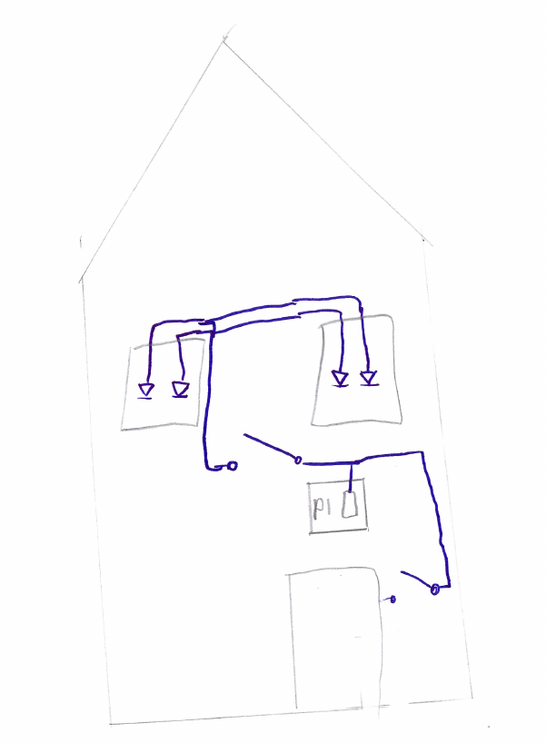
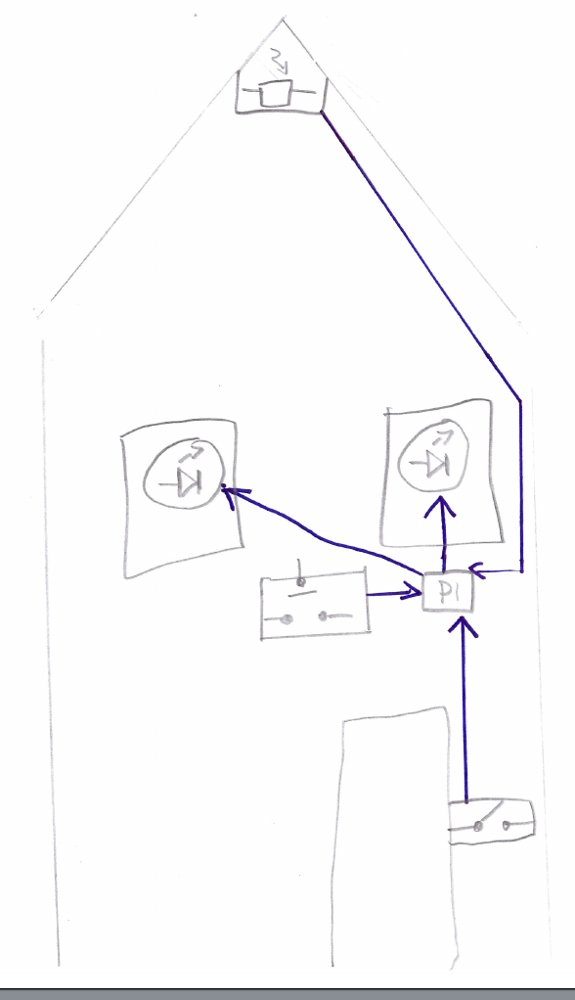
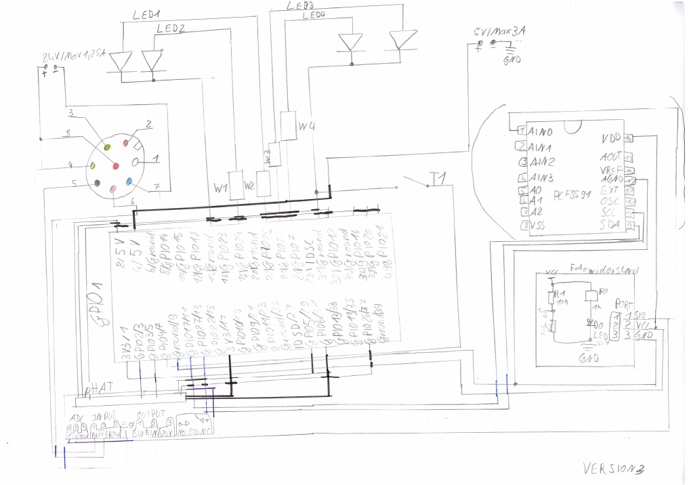
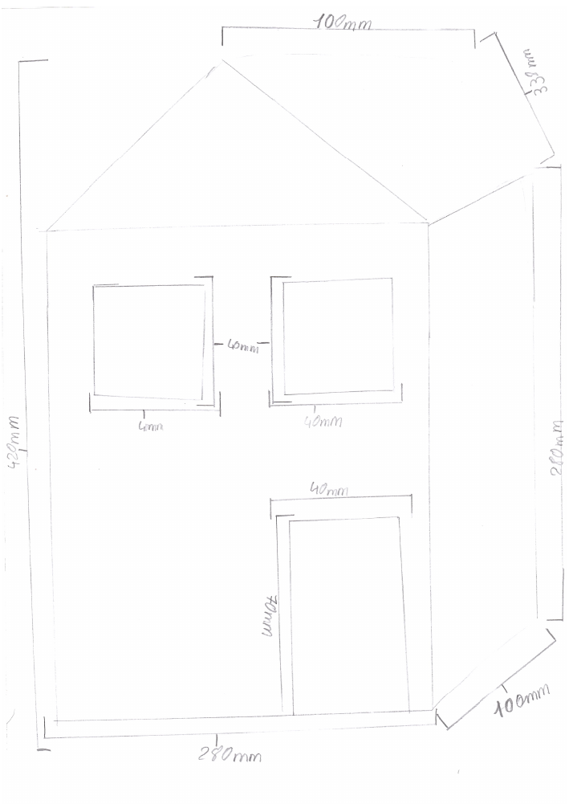

During a two-week internship I was asked to create a model of a home lighting system.
Innerhalb eines zweiwöchigen Praktikums habe ich die Aufgabe bekommen ein Beleuchtungssystem für ein Model Haus zu fertigen und zu programmieren. Dies alles am Rapsberrypi, und zwar in der Programmiersprache c erst ging es darum, simple die LEDs anzusteuern
dann sollte zusätzlich ein Taster hinzugefügt werden mit den man die LEDs manuell ein und aus schalten kann dann sollte es auch noch eine automatische Zeit Steuerung geben um 6:00 sollte die LEDs kurz automatisch angehen und um spätestens 22:00
Uhr wieder ausgehen. Dazu kam noch ein Lichtsensor, der die LEDs bei einer gewissen Helligkeit wieder ausschaltet. Zusätzlich habe ich noch ein Bewegungsmelder verwendet der ebenfalls die LEDs einschalten soll aber nach einergewissen Zeit gingen
sie auch wieder aus. Zum Schluss kam noch ein Türsensor von SICK dazu, der die LEDs automatisch ausschaltet, sobald die Türe sich schließt und es einschaltet, wenn sie sich öffnet. Das alles wurde dann in ein Modelhaus eingebaut welches ich selber
angefertigt habe aus einer Multiplexplatte. Der Rapsberrypi wurde in der innenseite an einer Hutschiene bestesteigt und dort auch verkabelt mit allen anderen Komponenten so das von außen jeglich nur der Taster zu sehen war damit man die LEDs auch
"bedienen" konnte.



